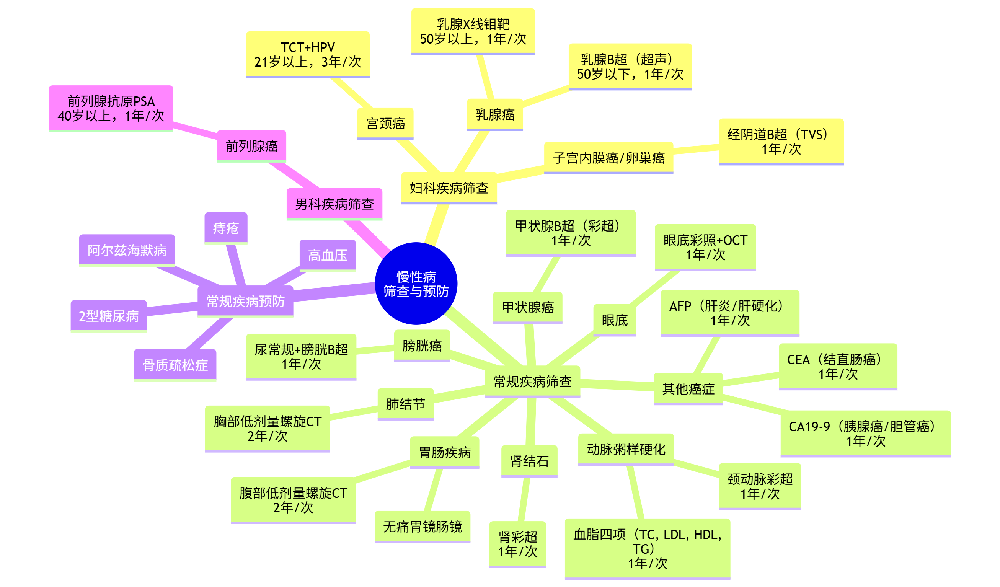

健康与长寿#
人生精彩度 = 健康且自由的生命时间长度#
世界通过随机性塑造了形形色色拥有不同价值观的人，不同人对自由、健康、权力、金钱、色欲等事物的追求热烈程度不同。本人的价值观就是人生要尽可能的精彩，衡量精彩程度的方法，就是计算健康且自由的生命时间长度。
如何获得自由？通过权力和金钱可以获得自由，但是权力和金钱的存量是“脆弱”的，失而难以复得，而随时获得权力的这种能力难以实现，随时获得金钱的能力更容易习得，这也是众多投身金融领域的人士共识——通过金融更高效地获得金钱进而获得自由。
如何长期保持健康？这基本是在获得一定程度自由后人士的共识，因为都想要更长时间地保持这种幸福舒适的状态。本文剩余内容就是研究总结适合自己的相关方案，信息来源包括亲身经历、生物医学资料等，内容也会随着时间的推移而更新。
健康寿命预期#
“追求永生”吸引了古今中外无数人士前仆后继地研究，无论是使用传统方法还是现代方法，“永生”依然是人类未解之谜，因此更实际的方法是尽可能延长寿命。
但是随着人类精神世界的丰富，无意义地延长寿命如在医疗机构使用医学辅助器械维持生命，难以被接受。因此延长无重大疾病和长期疾病的健康寿命备受重视，以下表格列举了全球部分高健康寿命预期的国家和地区：
Healthy life expectancy, 2021
Country |
Year |
|---|---|
Singapore |
73.6 |
Japan |
73.4 |
South Korea |
72.5 |
Iceland |
71.4 |
Luxembourg |
71.2 |
Norway |
71.2 |
Switzerland |
71.1 |
Sweden |
71.1 |
Spain |
71.1 |
Israel |
70.8 |
Cyprus |
70.7 |
Malta |
70.7 |
Australia |
70.6 |
Italy |
70.6 |
France |
70.1 |
Denmark |
70.1 |
Ireland |
70 |
New Zealand |
70 |
Netherlands |
70 |
Finland |
69.9 |
Belgium |
69.8 |
Austria |
69.8 |
Canada |
69.8 |
Portugal |
69.5 |
Slovenia |
69.4 |
Germany |
68.9 |
Puerto Rico |
68.8 |
United Kingdom |
68.6 |
Greece |
68.6 |
Chinese Mainland |
68.6 |
source: https://ourworldindata.org/
以上数据进行了性别平均，但根据大量数据表明，不同地区和人种的生理男性相比生理女性的平均健康寿命预期都有 2%-4% 的缩短，主要原因是男性更可能从事危险工作、抽烟、酗酒等。因此作为男性，想要弥补这个差值，要尽可能避免上述行为。
根据数据统计，健康寿命预期约占普通寿命预期的 85% 左右，因此人生平均会有大约 1/6 的生命时间是在疾病缠身的情况下度过。现代医学已经能够对急性疾病进行有效医治，因此影响普通寿命预期的都是长期慢性疾病，根据 Peter Attia 的理论，疾病缠身的生命时间主要都与以下 4 类慢性疾病打交道：
心脏病
癌症
阿尔兹海默症
2 型糖尿病
工作与健康#
在中国大陆，正常情况下会有大约 1/4 的生命时间是在有家庭长辈资金资助的情况下在学习环境中度过的，此时的生活压力相对较小，除去疾病缠身的约 1/6 的生命时间，大约有 60% 的健康生命时间（约 40 年）是在以工作为主的生活状态中度过的。中国大陆是典型的极右派——雇主友好型——内卷型——生产型社会，与北欧国家如 Iceland, Norway, Sweden, Denmark, Finland 完全相反。虽然数据显示中国大陆的健康寿命预期仅比北欧五国少不到 5 年，但是该数据并不能很好地反映工作环境主要是在经济下行时期的 Gen Z 一代的情况，且生活在中国大陆的绝大部分人士都压榨了个人的非工作时间，以此来换取维持生计的资金，因此“人生精彩度”要远低于发达国家和地区。
移民至 Work Life Balance 更容易实现的国家和地区是首要选择，但是该选择通常实现成本较高，且在准备过程中依然要处于高强度工作和生活的紧平衡状态，如何在这种环境下维持长期健康是最重要的议题。由于在中国大陆生活的绝大部分非顶级特权人士长期处于有污染的空气、水、食品、土壤等环境中，在撰写本文时，本人已经经历了超过 20 年这样的生活，因此有些不可逆的对人体健康的损害已经发生，今后只能尽可能避免更多的此类危害。
尽早积累个人退休养老资金，及早从维持生计型的工作退休，是大幅增加“人生精彩度”的有效方法。在没有婚姻、抚养子女、家庭长辈和个人发生重大意外的前提下，花费大约 30% 的健康生命时间（约 20 年）积累个人退休养老资金，使用该资金可持续地支持后续大约 45% 的生命时间是可行的。此时仍有大约 30% 的健康生命时间（约 20 年）处于高强度的以维持生计型工作为主的生活状态，需要通过精心安排来维持长期的健康状态。本文以下内容都是在设计更合理的安排方法。
睡眠#
光照是影响人体生物钟的重要因素之一，因此需要控制人体接收到的光照时间和强度；早晨醒后，接受光照 2-10 分钟，以自然光为最佳；当地时间 23 时至次日凌晨 4 时，尽量减少接受光照，如必须则使用红黄暖光和防蓝光眼镜。
坚持午睡 10-20 分钟。
夜晚睡眠时长维持在 6 小时或 7.5 小时，尽量是 1.5 小时的整数倍，避免频繁切换睡眠时长，维持生物钟。
尽量不摄入咖啡因、牛磺酸，适量补充镁元素，改善睡眠质量，避免直接补充褪黑素。
高质量的睡眠会促进大脑神经元的重新连接，也就是促进学习、记忆和理解。
饮食#
早晨醒后 1 小时内不进食，晚上睡觉前 2-3 小时内不进食，日内最佳进食时间窗口是 8 小时，时间窗口外主要强调不摄入糖类和蛋白质。
早餐多摄入蛋白质，有助于增肌。
午餐吃低热量及富含络氨酸的食物，包括坚果、大豆、部分蔬菜等，促进多巴胺、肾上腺素释放。
晚餐吃少量淀粉及富含色氨酸的食物，包括白肉等，促进血清素的转化。
使用抗生素会严重破坏肠道菌群生态，尽可能避免。
高纤维食物如谷类、豆类、蔬菜、坚果会促进肠道菌群生态，由于发酵类食物如酸奶等制作流程的安全性及含有的其他有害物质难以控制，因此避免多食用即便对肠道菌群生态有益。
尽量避免深度加工的食品摄入，控制糖和油盐的摄入，“素食主义”可取之处在于多食用植物，但蛋白质的大量摄入是必要的，不过要控制叶酸和嘌呤的摄入，避免器官结石和尿酸升高。
适度保持饥饿，但绝不能暴饮暴食。
补充omega3、EPA、磷脂酰丝氨酸、花青素、电解质等有助于维护神经系统，以食物补充为主而非补剂。
运动#
早晨醒后，+30min/+3h/+11h 这三个时间段适合运动，尽可能避免晚上运动。
晚餐后适量散步，促进血糖分解。
根据 John Ratey，运动会改变大脑生理结构，使之处于更佳状态，能更好地应对压力和焦虑、治疗抑郁和成瘾、延缓衰老等。
心理健康#
多巴胺的运行机制类似于中央银行，绝对值并不是最重要的，相对变化量才是最重要的，中央银行有货币宽松和紧缩构成的周期，多巴胺释放有峰值有低谷。
中央银行最佳的货币政策是经常保持宽松但是不让货币泛滥，紧缩时避免过度；多巴胺运行的最佳机制是经常保持容易释放，但释放的峰值不要过高，在低谷的时间不要过长且偏移幅度不要过大；总结就是易于快乐且波动率不要过大和频繁。
降低预期，把多巴胺的峰谷周期拉长，压低峰谷差值，设定中长期实践项目配合短期目标节点可以实现这种周期，如长篇写作、长期旅行、个人开发与创作、健身运动。
尽量减少接触令多巴胺峰谷周期缩短的项目如短视频、短文、短社交等，避免接触令多巴胺峰谷差值扩大的项目如抽烟、酗酒、化学精神药物等。
多开展探索类活动，通过未知且随机的奖励来刺激多巴胺，如信息收集、户外走访等。
多巴胺的运行有很明显的“自我指涉”现象，因此心理暗示对促进多巴胺的释放有帮助，恢复并保持自信相比药物辅助更加有效。
控制社交比较心理，专注自我感受和自我提升，保持“空杯心态”和“丐帮心态”。
以高蛋白、坚果、浆果为主的饮食结构，为多巴胺的合成准备充足的原料；多运动和多听有激昂部分的音乐，对多巴胺的释放有明显提升，且这两种行为的成本低廉；有效社交和异性接触对多巴胺的释放有显著效果，虽然成本相对高昂，但是也要适当安排。
注意力#
犯错和失败的尝试感到的沮丧时，神经系统会释放肾上腺素、乙酰胆碱和多巴胺，在这种状态下，学习的效果更好，因此多进行尝试并在失败后重新调整，形成良好的专注学习模式。
大约以 25 岁为分界线，低于此则神经元的可塑性非常好，适合接受大跨度和广泛的知识；高于此则神经元的可塑性相对变差，但依然可以进行递进式学习。
难以通过思想精神来控制大脑的神经系统，因此想要促进专注学习，首先需要营造良好的客观物理条件，而非通过心理暗示来控制。
深呼吸、有节律且舒缓的音乐和小幅度的咀嚼都对专注学习有促进作用，在长时间的学习过程中随机间歇 10 秒可以提升效果。
降低频繁的模式切换，如短视频、短文、短社交等，有助于提升学习专注度。
根据 Judith Grisel，酒精、尼古丁、成瘾性药物会改变大脑生理结构，使之处于不良状态，因此要尽可能避免。
其他健康#
避免过度清洁，在经常清洁的身体部位如手和面部补水和补油。
肥胖和糖尿病会加速衰老，因此无论如何都要避免。
在高强度的工作状态中穿插休息时间，并在长期高强度的工作周期中安排深度放松时间，即积极的、有意识的休憩方式而非简单的无所事事。
常见癌症病因#
胃癌：肠上皮增生、胃异型增生
肝癌：肝纤维化、肝硬化
肠癌：不典型增生、腺瘤性息肉
宫颈癌：宫颈上皮内病变
乳腺癌：乳腺非典型增生
胰腺癌：胰腺上皮内瘤变
慢性疾病筛查与预防#

2025.7.30 Version 1.0
2025.8.3 Version 1.1